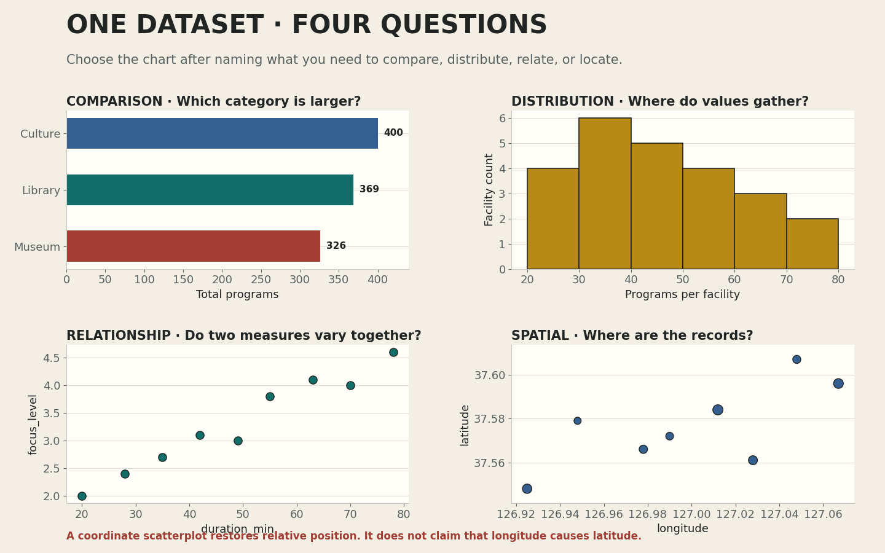
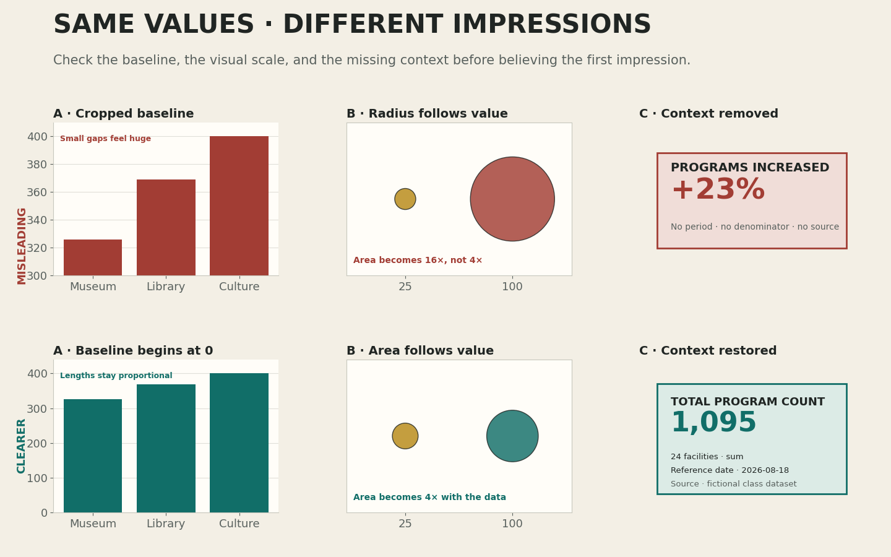

그래프를 꾸미기 전에 질문과 표현 규칙을 연결하는 법
오늘의 학습 목표
- 데이터 질문을 비교, 분포, 관계, 공간의 네 유형으로 구분할 수 있습니다.
- 표의 열을 위치, 길이, 색상, 크기, 문자에 연결하는 과정을 설명할 수 있습니다.
- 가로 막대그래프, 히스토그램, 관계 산점도, 좌표 산점도가 서로 다른 질문에 답한다는 점을 설명할 수 있습니다.
- 관계 산점도와 위치 좌표 산점도를 같은 방식으로 해석하지 않을 수 있습니다.
- 잘린 축, 잘못된 면적 비례, 빠진 분모와 결측값이 인상을 왜곡하는 이유를 찾을 수 있습니다.
- 공식 데이터 시각화 사례에서 제목, 대상, 비교 기준, 사회적 맥락을 읽을 수 있습니다.
- 0-6분10주차 연결
같은 표로 만든 지도와 그래프를 비교합니다.
- 6-15분질문 네 유형
비교·분포·관계·공간을 구분합니다.
- 15-25분시각적 인코딩
열을 위치·길이·색상·크기·문자에 연결합니다.
- 25-35분오해를 만드는 그래프
축·면적·맥락의 세 사례를 진단합니다.
- 35-44분공식 사례
Du Bois의 데이터 초상을 읽습니다.
- 44-50분개별 선택 기록
질문에 맞는 그래프와 이유를 정합니다.
- 50-60분선택 확장
왜곡된 그래프를 정직한 버전으로 다시 설계합니다.
수업 운영: 기본 50분과 확장 60분
기본 50분에는 10주차 연결, 질문 네 유형, 시각적 인코딩, 오해를 만드는 세 사례, 공식 사례와 개별 선택 기록까지 진행합니다. 설명과 확인이 빠르게 끝난 경우에만 50-60분 확장에서 잘린 축을 고치고 맥락 문장을 보완합니다. 확장은 필수 과제나 추가 점수가 아닙니다.
프로그래밍을 몰라도 먼저 붙잡을 문장
좋은 그래프는 멋있는 모양이 아니라, 하나의 질문에 필요한 비교를 불필요한 과장 없이 보여 주는 그림입니다. 오늘은 코드를 작성하기 전에 무엇을 왜 보여 줄지 판단합니다.
0-6분 · 같은 데이터도 질문이 달라지면 다른 그림이 된다
10주차에는 24개 공공문화시설의 latitude와 longitude를 지도 위 위치로, program_count를 원 크기로, category를 색상으로 바꾸었습니다. 그 지도는 주로 “시설이 어디에 있는가?”라는 공간 질문에 답했습니다.
그러나 같은 표에서 “세 범주 가운데 프로그램 수 합계가 가장 큰 범주는 무엇인가?”를 물으면 지도보다 가로 막대그래프가 직접적입니다. “시설별 프로그램 수가 어느 구간에 모이는가?”를 물으면 히스토그램이 더 적절합니다. 데이터 파일이 그래프를 자동으로 결정하는 것이 아니라 질문이 필요한 비교 구조를 결정합니다.

| 질문 | 주로 보는 열 | 적절한 표현 | 직접 답하지 못하는 것 |
|---|---|---|---|
| 어느 범주의 합계가 큰가? | category, program_count | 가로 막대그래프 | 각 시설의 정확한 위치 |
| 시설별 값은 어디에 모이는가? | program_count | 히스토그램 | 특정 시설의 장소명 |
| 시설은 서로 어디에 놓였는가? | longitude, latitude | 지도 또는 좌표 산점도 | 위치가 생긴 원인 |
도해에서 질문과 그래프를 연결하기
네 패널에서 하나를 골라 “이 그림은 ___을 비교하기 때문에 ___ 그래프가 적절하다”라는 문장을 작성합니다. 정답 그래프의 이름만 적지 말고 무엇을 비교하는지까지 적습니다.
확인: 지도에 원 크기가 있으므로 범주별 합계도 가장 정확히 비교할 수 있는가?
아닙니다. 지도에서는 원이 서로 떨어져 있고 사람은 원의 면적을 정확히 더하기 어렵습니다. 범주별 합계를 직접 비교하려면 같은 기준선에서 시작하는 가로 막대그래프가 더 명확합니다.
확인: 같은 CSV에는 정답 그래프가 하나만 존재하는가?
그렇지 않습니다. 질문에 따라 적절한 그래프가 달라집니다. 다만 하나의 질문을 정한 뒤에는 그 질문에 불필요한 정보와 오해를 만드는 표현을 줄일 수 있습니다.
6-15분 · 비교, 분포, 관계, 공간 질문을 구분하기
그래프를 고를 때는 먼저 질문의 동사를 찾습니다. “더 큰가?”는 비교, “어디에 모이는가?”는 분포, “함께 변하는가?”는 관계, “어디에 있는가?”는 공간 질문에 가깝습니다. 한 문장에 여러 질문을 섞었다면 이번 그래프에서 가장 먼저 답할 질문 하나를 고릅니다.
| 유형 | 쉬운 판별 질문 | 예시 | 첫 선택 |
|---|---|---|---|
| 비교 질문 | 무엇이 더 크거나 작은가? | 세 범주의 프로그램 수 합계는 어떻게 다른가? | 정렬된 가로 막대그래프 |
| 분포 질문 | 값들이 어느 구간에 모이고 퍼지는가? | 시설별 프로그램 수는 어느 범위에 많이 모이는가? | 히스토그램 또는 점 그림 |
| 관계 질문 | 두 측정값이 함께 변하는가? | duration_min이 길수록 focus_level도 달라지는가? | 관계 산점도 |
| 공간 질문 | 기록이 어느 위치에 있는가? | 시설 24개는 서로 어떤 상대적 위치에 있는가? | 지도 또는 좌표 산점도 |
같아 보이는 두 산점도를 다르게 읽기
관계 산점도에서 가로축과 세로축은 서로 다른 두 측정값입니다. 9주차 기록의 duration_min과 focus_level을 놓으면 작업 시간이 길어질 때 집중도도 일정한 방향으로 변하는지 살필 수 있습니다. 그래도 점의 패턴만으로 한 변수가 다른 변수의 원인이라고 단정하지 않습니다.
좌표 산점도에서 가로축 longitude와 세로축 latitude는 장소의 위치를 복원하는 한 쌍입니다. 점의 배치로 시설이 모인 곳과 떨어진 곳을 볼 수 있지만, 경도와 위도의 상관관계를 해석하거나 원인을 주장하는 그래프가 아닙니다.
확인: 점이 오른쪽 위로 모이면 두 산점도 모두 양의 상관관계인가?
아닙니다. 관계 산점도에서는 두 측정값이 함께 커지는 패턴을 검토할 수 있습니다. 좌표 산점도에서는 오른쪽 위가 단지 더 동쪽이면서 더 북쪽인 위치를 뜻합니다. 축의 의미를 먼저 읽어야 합니다.
확인: 분포 질문에 평균 막대 하나만 그려도 충분한가?
평균 하나는 값들이 얼마나 퍼졌는지, 극단적으로 크거나 작은 값이 있는지 보여 주지 못합니다. 분포가 질문이라면 개별 값이나 구간별 빈도가 보이는 히스토그램, 점 그림, 상자그림을 고려합니다.
15-25분 · 표의 열을 시각적 인코딩으로 바꾸기
시각적 인코딩은 데이터 값을 눈으로 구분할 수 있는 성질에 연결하는 규칙입니다. 표의 열을 그대로 그림에 붙이는 것이 아니라, 위치·길이·색상·크기·문자 가운데 어떤 성질이 질문에 필요한 차이를 가장 정확하게 전달할지 결정합니다.
| 인코딩 | 잘 전달하는 정보 | 이번 데이터의 예 | 주의할 점 |
|---|---|---|---|
| 위치 | 순서, 수치, 좌표 | 경도와 위도를 가로·세로 위치에 연결 | 축의 의미와 단위를 표시 |
| 길이 | 공통 기준선에서의 수치 비교 | 범주별 합계를 막대 길이에 연결 | 막대축을 0에서 시작 |
| 색상 | 서로 다른 범주 구분 | 도서관·박물관·문화센터 | 색상만으로 구분하지 않음 |
| 크기 | 대략적인 양의 차이 | 시설별 프로그램 수를 점 면적에 연결 | 반지름이 아니라 면적을 값에 비례 |
| 문자 | 정확한 이름, 값, 맥락 | 질문형 제목, 직접 주석, 출처 | 모든 점에 긴 문장을 붙이지 않음 |
정확한 크기 비교에는 대체로 공통 축의 위치와 길이가 유리합니다. 색상과 면적은 범주나 대략적인 차이를 빠르게 보여 줄 수 있지만 정확한 수치 비교에는 한계가 있습니다. 그래서 3교시 포스터는 합계를 가로 막대그래프로 보여 주고, 위치 좌표 산점도에서는 색상과 표식 모양을 함께 사용합니다.
무엇을 비교하거나 찾으려는가?
범주와 수치, 좌표 가운데 무엇이 필요한가?
위치·길이·색상·크기·문자를 어떻게 연결하는가?
축, 범례, 단위, 누락, 출처가 보이는가?
확인: 프로그램 수가 두 배이면 점의 반지름도 두 배로 만들면 되는가?
원이 나타내는 양을 면적으로 읽게 할 때 반지름을 두 배로 만들면 면적은 네 배가 됩니다. 크기로 수치를 표현한다면 도구가 면적을 수치에 맞게 조절하는지 확인하고, 정확한 비교가 필요하면 막대 길이나 직접 숫자를 함께 제공합니다.
확인: 색상 세 개가 잘 보이면 표식 모양은 필요 없는가?
화면에서는 구분되어도 색각 차이, 낮은 밝기, 흑백 출력에서는 같아 보일 수 있습니다. 같은 범주를 색상과 표식 모양에 함께 연결하면 한 가지 단서가 사라져도 구분할 수 있습니다.
25-35분 · 같은 값으로도 다른 인상을 만들 수 있다
그래프는 자동으로 객관적인 결과가 되지 않습니다. 축의 범위, 도형의 크기, 제목과 출처의 유무는 읽는 사람의 첫인상을 바꿉니다. 아래 세 사례는 값은 유지하면서 표현만 바꾸었을 때 차이가 얼마나 다르게 느껴지는지 보여 줍니다.

| 사례 | 문제 | 왜 오해하는가? | 수정 |
|---|---|---|---|
| 잘린 막대축 | 300부터 축을 시작 | 작은 값 차이가 막대 길이의 큰 차이처럼 보임 | 막대그래프의 수치축을 0에서 시작 |
| 반지름 비례 | 값을 원의 반지름에 그대로 연결 | 면적 차이가 실제 수치 차이보다 크게 보임 | 면적이 값에 비례하도록 조절하거나 막대 사용 |
| 맥락 제거 | 증가율만 크게 표시 | 기간, 분모, 표본 범위, 결측값, 출처를 알 수 없음 | 무엇을 어떤 범위에서 계산했는지 함께 표기 |
결측값을 조용히 빼면 분모가 달라진다
24개 시설 가운데 프로그램 수가 기록되지 않은 시설 네 곳을 제외하고 평균을 냈다면 분모는 24가 아니라 20입니다. 제외한 이유와 유효한 행 수를 밝히지 않으면 같은 제목 아래 서로 다른 계산을 비교할 수 있습니다. 이번 수업용 정제 CSV는 24행 모두에 프로그램 수와 좌표가 있지만, 실제 데이터에서는 결측값 처리 기준을 반드시 기록합니다.
확인: 막대축을 잘라 확대하면 언제나 거짓말인가?
모든 경우에 금지되는 것은 아니지만 막대의 길이는 기준선에서 시작한 전체 크기로 읽히므로 특히 주의해야 합니다. 세밀한 변화가 목적이라면 점 그래프나 선 그래프처럼 차이를 읽기에 알맞은 표현을 선택하고, 축 범위가 잘렸다는 사실을 분명하게 표시합니다.
확인: 실제 값이 맞으면 제목은 자유롭게 과장해도 되는가?
제목도 데이터 해석의 일부입니다. “문화센터가 압도적으로 우세하다”는 표현은 400과 369의 차이를 실제보다 크게 느끼게 할 수 있습니다. “문화센터의 프로그램 수 합계가 세 범주 중 가장 크다”처럼 데이터로 확인한 범위만 씁니다.
35-44분 · 공식 사례: W.E.B. Du Bois의 데이터 초상
W.E.B. Du Bois가 1900년 파리 만국박람회의 전시를 위해 준비한 차트와 그래프는 해방 이후 아프리카계 미국인의 경제적·사회적 진전을 보여 주기 위해 제작되었습니다. 미국 의회도서관 기록에는 펜, 잉크, 워시와 사진으로 제작된 72개 항목이 56장의 포스터 보드에 구성되었다고 설명되어 있습니다.
Library of Congress 원본 컬렉션 ↗
썸네일의 색상과 형태만 감상하지 않고 제목, 제작 시기, 전시 목적, 조사 대상, 비교 기준을 차례대로 확인합니다. 디지털 이미지가 제공되는 항목은 개별 기록으로 들어가 큰 이미지를 살펴봅니다.
- 제작 맥락
- 1900년 파리 만국박람회
- 표현 대상
- 해방 이후의 경제·사회적 변화
- 읽기 기준
- 제목, 단위, 기간, 비교 대상, 출처
형태보다 먼저 주장을 찾는다
강한 색과 기하학적 구성이 주의를 끌지만, 한 장의 포스터가 무엇을 주장하는지는 제목과 수치의 관계를 함께 읽어야 알 수 있습니다. 장식처럼 보이는 선과 면도 비교 순서와 변화의 방향을 조직합니다.
- 질문
- 이 포스터는 어떤 변화를 보여 주려 하는가?
- 인코딩
- 길이·면적·위치·색은 각각 무엇을 뜻하는가?
- 한계
- 어떤 대상과 기간은 포함되지 않았는가?
이 사례에서 배울 점은 오래된 디자인을 그대로 흉내 내는 것이 아닙니다. 데이터, 그래프, 제목, 사회적 맥락을 한 장의 읽기 순서로 조직하는 방법입니다. 3교시 포스터도 질문형 제목, 핵심 관찰, 두 그래프, 출처와 한계를 하나의 주장으로 묶습니다.
확인: 색과 형태가 독창적이면 수치 단위가 없어도 데이터 포스터인가?
시각적으로 인상적일 수는 있지만 수치가 무엇을 뜻하는지 검증하기 어렵습니다. 데이터 포스터에서는 표현의 독창성과 함께 대상, 기간, 단위, 비교 기준을 읽을 수 있어야 합니다.
확인: 1900년 자료이므로 오늘의 데이터 시각화와 연결할 수 없는가?
도구와 제작 환경은 달라졌지만 질문, 데이터 선택, 시각적 인코딩, 제목과 맥락을 조직한다는 문제는 이어집니다. 다만 당시의 역사적 조건과 제작 목적을 지운 채 순수한 스타일로만 소비하지 않습니다.
44-50분 · 세 질문에 알맞은 그래프를 개별로 선택하기
아래 세 질문마다 그래프 하나와 시각적 인코딩을 고릅니다. 답은 그래프 이름으로 끝내지 않고 “무엇을 무엇에 연결하기 때문에 적절한가”까지 한 문장으로 작성합니다.
| 질문 | 선택할 그래프 | 설명 문장 틀 |
|---|---|---|
| 세 시설 범주의 프로그램 수 합계를 비교하려면? | 학생이 선택 | 범주를 ___에, 합계를 ___에 연결하므로 적절하다. |
| 시설별 프로그램 수가 어느 구간에 모이는지 보려면? | 학생이 선택 | 개별 수치를 ___으로 나누고 각 구간의 ___을 보여 주므로 적절하다. |
| 시설 24개의 상대적 위치를 보려면? | 학생이 선택 | 경도를 ___에, 위도를 ___에 연결하므로 적절하다. |
3교시까지 유지할 고정 미션 계약
필수 포스터에는 범주별 프로그램 수 합계를 비교하는 가로 막대그래프와 시설 24개의 상대적 위치를 보여 주는 좌표 산점도를 함께 넣습니다. 두 그래프의 역할을 섞지 않고 질문형 제목, 관찰 문장, 해석의 한계, 데이터 출처와 기준일을 포함합니다.
확인: 답안에 “막대그래프가 보기 편해서”라고만 써도 되는가?
보기 편하다는 느낌만으로는 질문과 표현의 연결을 확인할 수 없습니다. “세 범주의 합계를 공통 기준선에서 시작하는 막대 길이로 비교할 수 있어서”처럼 데이터 열, 인코딩, 비교 방법을 포함합니다.
50-60분 · 선택 확장: 왜곡된 그래프 다시 설계하기
기본 학습을 모두 마친 경우에만 개별로 진행합니다. 제공된 잘린 축 막대그래프를 아래 기준으로 다시 설계하고, 수정 전후의 인상이 달라진 이유를 세 문장으로 적습니다.
- 막대의 수치축을 0에서 시작합니다.
- 세 범주를 합계가 작은 순서에서 큰 순서로 정렬합니다.
- 축 이름에 “프로그램 수 합계”라는 계산 기준을 적습니다.
- “24개 가상 시설, 범주당 8개”라는 분모와 데이터 범위를 적습니다.
- 실제 차이보다 강한 표현이 없는 질문형 제목을 작성합니다.
확장 활동 완료 기준
축, 정렬, 계산 기준, 분모, 제목의 다섯 항목을 수정하고 “수치는 같지만 첫인상이 왜 달라졌는가?”에 세 문장으로 답하면 완료입니다. 확장은 3교시 귀가 조건과 추가 점수에 포함하지 않습니다.
수업 후 개별 복습
- 비교 질문과 분포 질문의 차이를 같은
program_count열로 설명합니다. - 관계 산점도와 좌표 산점도의 가로축·세로축 의미를 각각 적습니다.
- 위치, 길이, 색상, 크기, 문자에 연결하기 적절한 데이터 유형을 한 가지씩 적습니다.
- 막대그래프가 0에서 시작해야 하는 이유를 막대 길이라는 표현으로 설명합니다.
- 시각화에 분모, 결측값 처리, 출처를 함께 써야 하는 이유를 적습니다.
- Du Bois의 데이터 초상에서 형태 이외에 확인할 맥락 네 가지를 적습니다.
공식 자료
- Library of Congress — W.E.B. Du Bois 관련 차트와 그래프 컬렉션1900년 파리 만국박람회 전시를 위해 준비된 자료의 목록, 제작 정보, 디지털 이미지
- Seaborn 공식 문서 —
barplot막대가 집계값을 표현하며 0을 축 범위에 포함하는 이유 - Seaborn 공식 문서 —
scatterplothue,size,style을 이용한 시각적 의미 연결과 중복 인코딩